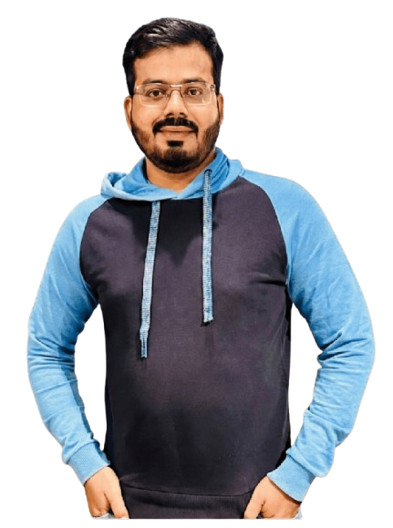

01 / BUILD
Reliable backend systems
APIs, data models, authentication flows, and background processing built with maintainability and failure handling in mind.
I'm Irfan — a backend-focused software engineer with 7+ years of experience turning complex requirements into reliable SaaS platforms, APIs, and integrations. I work primarily with Node.js, TypeScript, databases, and asynchronous workflows.

My work connects real product requirements with the backend systems that make them dependable.
APIs, data models, authentication flows, and background processing built with maintainability and failure handling in mind.
Provider APIs, webhooks, payments, e-commerce, and asynchronous synchronization that connect business tools.
Hands-on engineering paired with architecture planning, clear trade-offs, and collaboration across product and engineering teams.
Backend integration work for a SaaS platform connecting commerce, payments, shipping, and accounting providers.
An AI-assisted workflow for evaluating artist options against campaign goals, audience fit, and selection criteria.
I'm most effective when I can understand the product's constraints, own the implementation details, and collaborate on sensible technical choices.
Clarify the workflow, constraints, data, and failure cases before choosing technologies.
Prefer clear interfaces, reliable data flows, and designs that fit the current stage of the product.
Use collaboration, testing, debugging, and iterative improvement to support long-term ownership.
Open to remote senior engineering roles and selected contract opportunities.